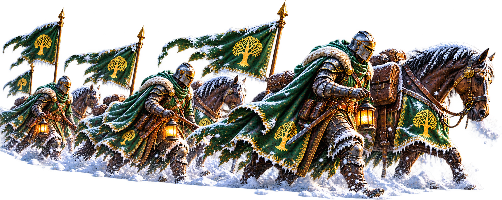

Frost 101
Frostborne is a large-scale seasonal battlefield where alliances and servers compete for territory, cities, gates and ultimately Ymir. You do not have to be one of our strongest fighters to make a difference. Preparation, teamwork and following the plan matter just as much.
What Is Frostborne?
Frostborne takes place on a separate map, much larger than Norheim. It is a campaign of exploration, expansion, building and coordinated battles rather than one single fight.
The alliance needs to establish safe positions, expand its territory and work with its allies. As the season progresses, new areas and objectives become available.
Entering the Frost
You can move your castle between Norheim and Frostborne. A transfer cooldown applies, so plan your movements instead of jumping between maps without thinking.
Your first arrival in Frostborne places you at a starting location. Later returns generally take you back near your previous position on the Frostborne map, while returning to Norheim brings you near your earlier location there.
The map begins in darkness. Castles, marching troops and cities reveal nearby areas, and vision is shared with your alliance and eligible allies. Enemy positions may remain hidden until they enter your shared field of vision.
Surviving the Cold
Ice is dangerous for a castle. Remaining in exposed frozen territory can gradually reduce Prosperity. Thermal Tower coverage and suitable unfrozen ground provide safer places to stay; protection shields can also help.
Before parking your castle, check the terrain and follow the locations designated by alliance leadership. A good position helps both you and the players around you.
Thermal Towers
Thermal Towers are the foundation of our expansion. They warm surrounding land, help protect castles from the cold, provide visibility and support our territorial advance.
R5 and R6 officers place towers. Members contribute by sending troops to construct them and, when needed, reinforce and defend them. After the initial placement, further towers must connect to the existing network.
Do not build or move randomly around an active expansion. Follow the tower team's instructions so that our territory grows in the right direction.
Gathering Resources
Gathering is a valuable contribution, even when you are not taking part in battles. The alliance needs resources to support its expansion and tower development.
Frostborne can offer higher-level resource nodes than Norheim, but gathering on icy ground may be slower. Choose safe, efficient nodes and follow any gathering priorities announced by the alliance.
Gates and Cities
Gates control access between regions. When the season's Chronicle opens them, alliances fight to capture and defend important routes. Cities and other strategic positions help control the map.
These battles require coordination. Wait for rally instructions, reinforce when asked and avoid starting unplanned fights that could weaken the alliance's position.
The Road to Ymir
Ymir is the central objective of the Frostborne campaign. Reaching it requires territory, access through key regions and cooperation between alliances and servers.
The exact timing of gates, objectives and the final confrontation follows the current season's Chronicle. Always use the latest announcements rather than relying on dates from an older Frostborne season.
Your Role in Frostborne
Not every player needs to lead a rally or defeat an enemy castle. You can help by preparing troops and healing speedups, gathering resources, building towers, reinforcing positions, reporting useful sightings and being online for coordinated objectives.
Pay attention to alliance announcements and ask questions when something is unclear. A player who follows the plan can be more valuable than a stronger player who acts alone.
Every tower built, every resource gathered and every coordinated action brings Crimson Oak one step closer to victory.